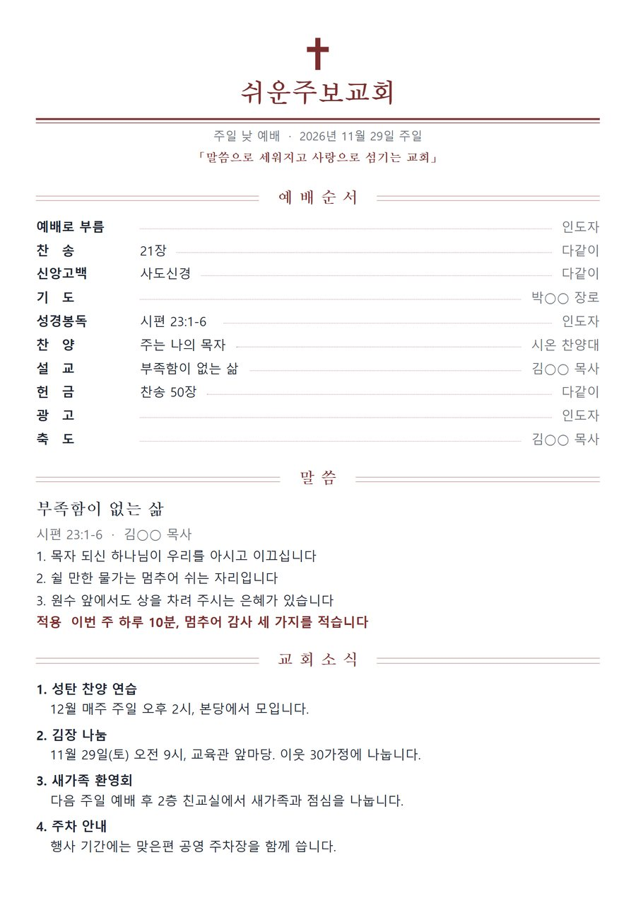
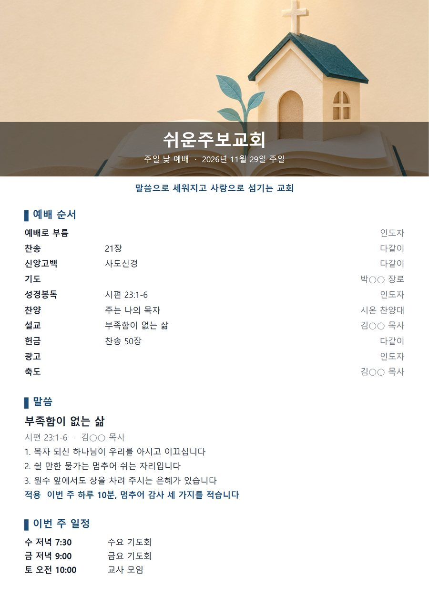
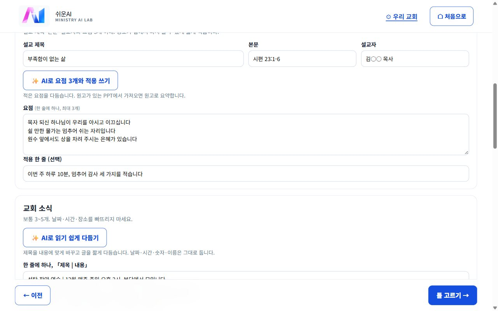
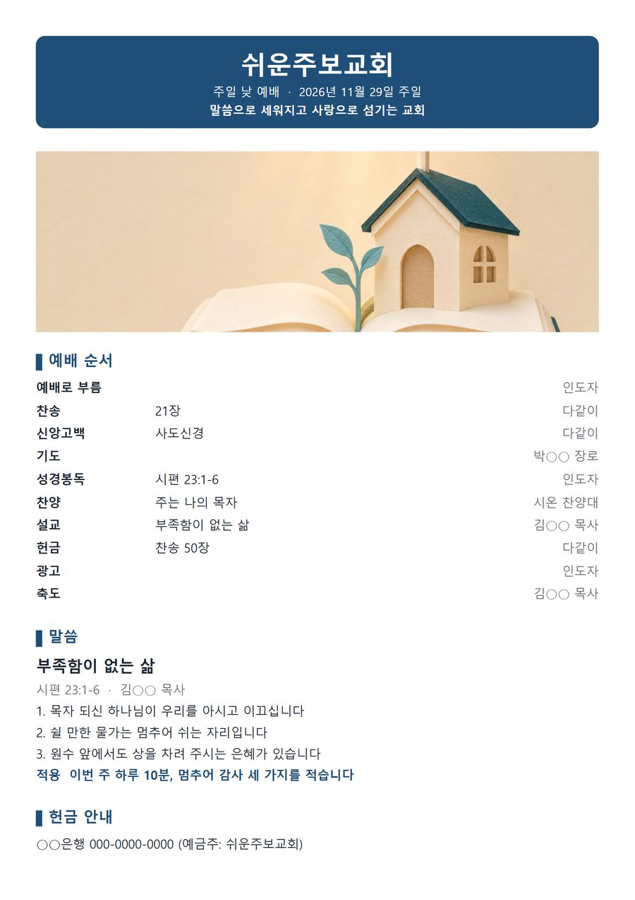
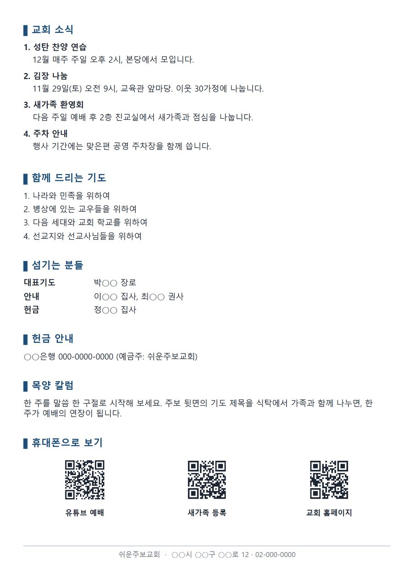

Windows 10 · 11
64비트 · 설치 프로그램(.exe) · 약 200MB · 0.32.0부터 쉬운주보 2차 기능
준비 중- 받은 파일을 엽니다.
- “Windows의 PC 보호” 창이 뜨면 추가 정보 → 실행을 누릅니다. 아직 코드 서명 전이라 나오는 창입니다.
- 바탕화면의 쉬운주보 아이콘을 누릅니다. AI 기능을 쓰려면 처음 한 번 쓸 AI(Claude·Codex 등)에 로그인합니다.
교회 주보 · Windows · 무료
이번 주 예배 PPT의 순서·설교·광고로 주보 칸을 채워 드립니다. 디자인을 고르고, 캔바처럼 직접 고치거나 AI에게 말로 부탁한 뒤, 인쇄용 PDF와 휴대폰 주보로 저장하세요.
쉬운AI를 설치하면 바탕화면에 쉬운주보 아이콘이 함께 생깁니다. 주보 내용은 이 PC에만 저장됩니다.


만드는 순서

디자인 10가지 × 판형 4가지
오래 써 온 교회 주보의 격식부터, 교회 사진을 크게 쓰는 표지까지. 글이 많으면 글자를 알맞게 줄이고, 적으면 키워 빈 곳 없이 맞춥니다.


할 수 있는 것

편집기 저장 메뉴의 [모바일 주보(HTML)로 저장]을 누르면 index.html 폴더가 생깁니다. 교회 홈페이지·블로그에 올리면 링크 하나로 나눌 수 있습니다.
홈페이지·유튜브 예배·새가족 등록 주소를 한 번 적으면, 종이 주보에는 QR 코드로, 휴대폰 주보에는 단추로 매주 들어갑니다.
예배당·성도·행사 사진을 넣어 두고 매주 눌러서 표지에 씁니다. 없으면 AI가 설교 제목으로 표지 그림을 그립니다.
칸 차례를 바꾸고, 필요 없는 칸은 빼고, 목양 칼럼 같은 우리 교회만의 칸을 만듭니다. 마음에 들면 「우리 교회 틀」로 저장.
쉬운AI에 올린 디자인 MD와 교회 스킬을 주보에서도 씁니다. AI가 우리 교회 색과 말투를 따라 고르고 다듬습니다.
지키는 것
내려받기 · v0.32.0
예배 PPT 프로그램 「쉬운AI」와 한 프로그램입니다. 설치하면 바탕화면과 시작 메뉴에 쉬운주보 아이콘이 생기고, 누르면 주보 화면부터 열립니다.
64비트 · 설치 프로그램(.exe) · 약 200MB · 0.32.0부터 쉬운주보 2차 기능
준비 중AI 없이도 주보는 만들 수 있습니다. 요약·다듬기·디자인 맡기기·표지 그림에만 AI 계정이 쓰입니다.
표지 그림은 Codex 로그인이 필요하고 몇 분 걸릴 수 있습니다.
성경 본문·찬송 가사는 프로그램에 들어 있지 않습니다. 쓰시는 성경에서 붙여 넣으세요.